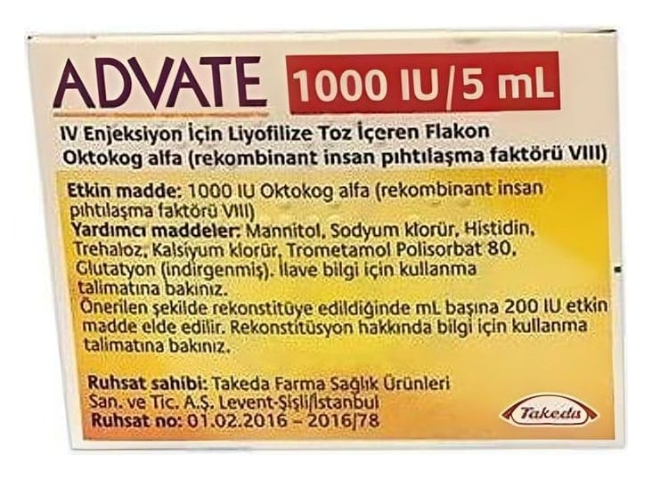

Advate 1000 IU/5 ml IV Enjeksiyon İçin Liyofilize Toz İçeren Flakon, 1 Adet

Ne için kullanılır
KT · Bölüm 1• ADVATE beyaz ila kirli beyaz arası dağılan bir toz içerir. Sulandırıldıktan sonra, çözelti berrak, renksizdir ve yabancı partiküller bulundurmaz. • ADVATE etken maddesi Oktokog alfa rekombinant DNA teknolojisi kullanılarak üretilmiş insan pıhtılaşma faktörü VIII’dir. Faktör VIII, kan pıhtısı oluşturmak ve
kanamayı durdurmak için gereklidir. Hemofili A (doğuştan gelen faktör VIII eksikliği) hastalarında, Faktör VIII bulunmaz veya düzgün çalışmaz. • ADVATE hemofili A hastalarında, kendiliğinden gerçekleşen veya ameliyat kaynaklı kanamaların önlenmesinde veya tedavisinde kullanılır. • Oktokog alfa [İnsan koagülasyon faktör VIII (rDNA)] 2332 amino asitli saf bir proteindir. Kobay over [Chinese hamster ovary (CHO)] hücrelerinde rekombinant DNA teknolojisiyle üretilmiştir. Hücre kültürleme, saflaştırmada ya da son formülasyon aşamasında herhangi bir (ekzojen) insan -veya hayvan- kaynaklı protein eklenmeksizin hazırlanmıştır.